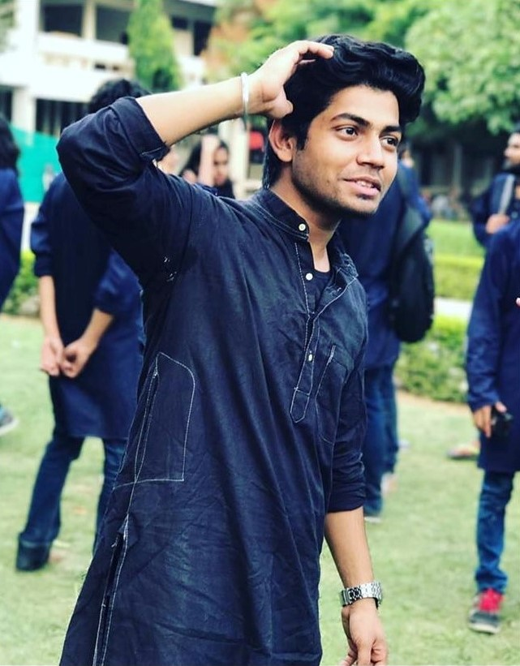
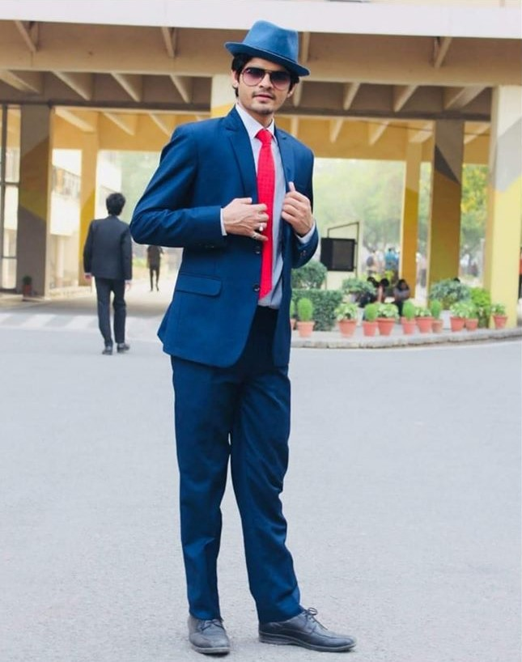
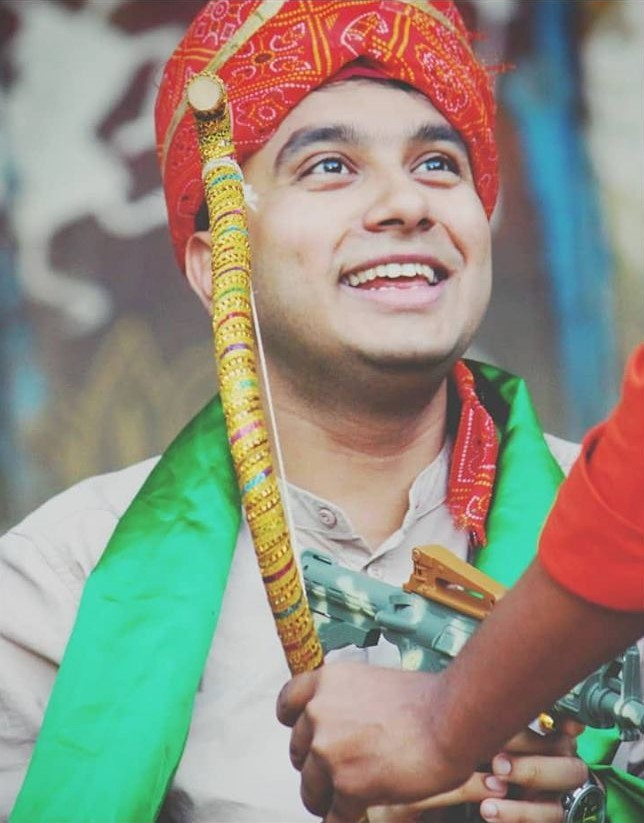

The man, the myth, the legend!
Arguably the best showman Ankahi has ever witnessed, Shubham Tambi, the director of the street play team is immensely famous for his iconic roles and charming personality. Be it the righteous Krishna or a gracious antagonist only he could pull off, he mesmerized the audience whenever he entered the circle. A perfect blend of talent, dedication, enthusiasm and dark humour, he was the best mentor we could possibly hope for. He constantly stood there with us throughout our journey, working passionately every day on our skills even when no one else could. Life will be so much harder when he won't be there to say "Chill Kar bro Mai dekh lunga".
Thank you for bringing the best out of us. Thank you for holding this team together. Thank you for always being there when needed. Thank you for everything.
Farewell Tambi sir, we love you 3000! ❤️
May you succeed in all your future endeavors!
This man needs no introduction. Perhaps one of the finest Dramatists IIT Delhi has ever produced, the skill and enthusiasm of Saurabh towards Dramatics is unmatchable. Acting, Direction, Production and what not; he knows them all better than anyone.
Saurabh Kumar was the director of the Stage team and apart from being a stupendous dramatist; he has nurtured a Drama culture at IIT which will be remembered for generations. Every play, every production; he was there to support and encourage us to achieve our full potentials and he brought out the best in us like no one ever could. Awards and recognitions (he has a lot of them!) are not even close to showing what you have done for this club and we are grateful to you for everything. Thank you Shambhu Ji/Bachhan/etc., etc. for making Ankahi what it is today! We wish you all the very best and success in your life and career ahead and we hope to make you proud!
Farewell Saurabh sir!❤️
Take it from a person who had absolutely no sense of scale, or take it from a person for whom music is the strong suit; both will be incomplete awe of what this guy has been able to create with a bunch of instruments. 'One man army', as the street team calls him very dearly, is the perfect description of this super duper musician.
"Aage xylo, bagal me harmonium, niche Djembe and haath me guitar" could be the perfect words to define him during the weeks before any major event. As long as he was there, no one ever had to worry about what would happen to the music, because "Rao sir sambhal lenge". He is the reason half the people in the street team could sit in the parodies when all their roles were taken away. He is the reason the Mandli wanted to perfect their beats, his hardwork and dedication truly drove us all to push ourselves harder.
He is the one who has given us the best memories. His infinite jamming sessions will most definitely be the one thing that the entire dramatics society will miss. It's his aura and the magic that he creates with his guitar, that once he starts playing, automatically everyone close by will join to sing along.
What Rao sir has given us, can never be replaced, such a personality has never been seen in Dramatics ever. He'll continue to be loved, adored and respected by everyone. Now that he's going, we hope that he still continues to help us and shower the generations to come with his music sense and awesomeness!
"Lafaz ki shakal me ehsaas likha jata h...yani garmi ko pyaas likha jata h......mere jazbat se wakif h mera kalam......mai wafa likhun to tera nam likha jata h..."
.One of the rare persons in dramatics who gets the real essence of a script, hats off to your knowledge of literature. You are a spectacular actor and director and yet so humble. The way you take up any character, be it Das Babu/ Pancha or any other, your efforts are commendable.
As a director you have worked really hard to help us develop from scrap. You are the reason that people like us, who had no inclination towards dramatics initially are so attached to this family. Thank you for being there in ups and downs of every production and motivating us. You made us believe in ourselves. We wish you all the very best for the upcoming challenges in your career. You will be missed Nazish Sir.
Forgot to mention, “Aap likhte bohot acha ho!”
"Mera juta hai japani, ye patalun ingalistaani, sir pe laal topi rusi, phir bhi dil hai Hindustani... " These lines could be an apt description for Akhilesh Sir. Yeah, he is a Superstar. He has the rare ability to fill even the most depressing situations (on stage and off stage) with the energy and positivity that he carries with him.
The Dramatics Club would like to bid farewell to one of it's most dedicated and hard-working guy on the set. He is the power house of energy and enthusiasm. He holds the record for the most number of acting performances at Ankahi by an individual, and has stolen hearts in each one of them.
Akhilesh Sir's contribution to the club is unmatchable both in front of the stage and at the back of it. Quite a many plays would not have been possible without him taking charging of building the large and detailed sets. He is our power source, he is the hulk of our team, a ONE MAN ARMY and one of the most talented actors in our college.
Ankahi - the Dramatics Society of IIT Delhi would like to celebrate his contribution for the club in the past four years at our college. Performances, like, Manohar, Vakil, Darshinghar, Sundal Lal (magistrate) , Genie, Bali, Sudhir have made a special place in our hearts.
He is one of the main reasons that our Dramatics Club is able to reach such heights. We thank you Akhilesh Verma for your contribution and wish you all the luck for your future. "Oioi oioioi"
Bolo "Ekling Baba ki Jai."
From "Uncounted 3.5 crore" to the very last play that you performed(so far) in Inter IIT, we saw the entire range of expressions which human beings are able to possess. Saif Ali, one of the most sensible and simple and kind-hearted person in Ankahi.
No matter what the situation is, we can always rely on you to make a mature decision and it's because of all these reasons and many more alike that you've become a role model for many of us.
And even though you have all the happiness any man can possibly have wink-wink, we still think you deserve plenty more.
Thanks for standing beside us whenever we needed you, for tolerating all the lame jokes and dark humour, but still loving us nevertheless!
Farewell Saif Sir!üíï
IN THE NAME OF NIKHIL OF HOUSE KUMAON || THE BEST SECRETARY AND THE SEXIEST OF THEM ALL || THE FIRST OF HIS NAME || RIGHTFUL HEIR TO THE DRAMA ROOM || LORD COMMANDER OF 13 HOSTELS || KING IN THE NORTH (RENDEZVOUS)
"Apna Secy kaisa ho, Nikhil Dadheech jaisa ho" ---- These were the words of every member of drama club who witnessed your successful tenure. Fresher's monoact ka event introduce karke har hostel se fachhon ka participation bhadaya aur interest bhi. One of the finest and purest actors Ankahi have ever witnessed. With your wonderful performances like Ravish Ji, Bapi da, Dr. Mirza, Dr. Fixit, you proved that you are meant to be a dramatist. A true dramebaaz. Aap nahi hote to sir aaj apne club ko jo chahiye tha, jisko wo apna keh sake, wo nahi milta..... apna Drama Room. Event coordinate karte hue hostel se bhi plays kiye. This just showed how much you love drama. Your management and leadership skills are unmatchable. Your are a true leader sir. Aapki, har kaam ko kaise karwana he, kaunsi cheez ka jugaad kaise aur team ko manage kaise karna he iski samjh lajawaab he. In short, you are one of the most brainy and smartest person we have ever seen.
Ankahi - The Dramatics Society of IIT Delhi is proud and honoured to bid farewell to it's best secretary. Your tenure will always be in our hearts. We love u Sexy_Secy.üíï
P.S. "mee saeky hun, me saem holl khulwaunga"üòç
The man having the ability to bring out humour through roles that cannot be replaced for years to come.
Even a single dailogue is enough for him to allure the whole crowd. His portrayal of Arjun, Raju, Sheikh, Sunny paaji has always been pure entertainment. His cute and innocent looks hide infinite emotions which have been touching the hearts of hundreds in the crowd. His humour was always one of the finest needles weaving the play. He will always be remembered for the energy and enthusiasm he carried with him.
Apart from your great skills to outperform any character, you had always been a great friend to each one of us. You stood by us in those practices of Tambi sirüòÖ, you made us relax when we were tired and above all you danced with us bringing up such new steps. You are our core senior and will always be.
Thank you Meena sir for staying with us through all the hardships we faced. The humour scenes will never be the same without you.
Its hard to bid you goodbye. Love you our cute, helpful, humorous and understanding senior. ❤❤❤
LADIES AND GENTLEMEN, dil thaam ke baith jaaiye, kyunki aa rahe hai woh...... Woh jo dikhne mein hai Shahrukh Khan, naam se Akshay Kumar..... Aap sabhi ke farmaish pe... hum sabko is boriyat ke shraap se mukt karane wale..... the great dramebaaz.... full nautanki... ladkiyon ka dil churane wale... the one and only... the legendary - "Akshay Kumar Soni".
Ankahi - the Dramatics Society of IIT Delhi would like to show it's great love and bid farewell to our favourite Akshay Kumar Soni. He is such a genius and a natural actor, capable of carrying any play on his strong shoulders. May it be the romantic and charming Rahul or the highly enthusiastic teacher of Akalpur Mohan or a sincere and simplistic Juror No. 8 fighting for justice - our "Mr. Reliable" always lives upto the hype. His strong stage presence captures the attention of the audience and his performances add a special charm and relatability to the play.
We are really greatful to have you in our club sir and to see you perform on stage has always been a delightful experience. Rahul, Mohan, Stephen Stepnovich Chubukov, Juror No. 8, etc., were always fun to watch.
Finally, in the end, we all would like to say..... "YE SAB KYA HAI !!!"üòç
Varshiki Jethwani has been the fuel in the engine of Ankahi in 2018-19. Her passion rotated the wheels of Ankahi's purpose in the world of stage in last two years.
Starting her journey with the Mumbai Mail to finding her Love in December on a train platform, from the humorous Chintak to the innocent Manturani, being a sweet guest house owner in The Mousetrap to getting her name published on The Front Page of Ankahi, she has clearly displayed the wide spectrum of her acting abilities through these indispensable characters.
She is a treat to watch and has nailed every role played so far. Acting is about pretending and role acting and she has the incredible ability to pull that off with complete honesty. She is that enchantress who mesmerises the audience with her perfect performance and establishes an amazing connect with them. “Now…Now…Now…” is the time to bid farewell to the most adorable Tina, cheerful Swati, courageous Kate, caring Rose and the amalgamation of them all Varshiki Jethwani.
P.S. -: She’s the one who made us understand that “Attitude is Everything”.
Farewell Varshiki Mamüíï
Here comes the IRON MAN of dramatics. The true conquerer. A man with thousand expressions. The HOTTEST artist we have ever witnessed. Whether it is a character in a play like FINAL SOLUTION, BATOHI or FRONT PAGE. or a monoact of DEATH (मौत),he absolutely proved everyone his versatility in acting, his dedication, his hard work to sharpen every single expression or body language. The way you pull yourself for every single character was mind blowing.
Beside all these things, the description of this man is incomplete without mentioning his fun loving nature, the person who always listens, like an elder brother, guided us to keeps on doing theatre, Btw he is also a very good dancer, you will get a chance to witness his performance on very very special occasions. His writing skills inspires many of us to do act on self written scripts. Sir your presence in any play making was the true source of positivity, the way you tried to solve our problem with your experience was magical. A director, actor, dancer, writer, singer & a good soul . We all wish you the very best of luck for your future journey.
Farewell Namit Sirüíï
A perfect blend of versatility and sincerity ,your unparalleled dedication towards this club has definitely inspired many. You might sometimes show yourself as a strict senior but deep down everyone knows that you care a lot. The countless number of plays , practices you have been a part of and the countless number of times you have given parties (pun intended, definitely ),you motivating the team, ah, you will be missed.
From your role of sweet and loving Ma to the evil looking devil, you played it all remarkably well. From standing alone on a platform to working together on ground you had been phenomenal. But more than drama it was the people you loved. Your care and love always cheered us. Those countless parties have always been fun with you üòÖ. Your fun loving nature and spirit to understand, really helped us.
More than a Goodbye , its a thankyou Thanks for being the friend and a guide everyone wishes for , you are a packet of emotions and we wish you the very best for your future endaevours.
Wish to tell u one thing,
Bata du,
Baata duuuu........üòÑ
Au revoir ❤❤
These four words are behind the number of successful productions that he has done in IIT. One of the members who developed the culture of Dramatics in PG students and inspired many more. The man who draws audience just by his name on the poster. Such is his fame. His knowledge of craft is impeccable.
The "peele kurte wala" who experimented a lot, learnt a lot and taught a lot more. From corrupt Gupta ji to sweet Yaseen, 14 year old Shubham to wierdo Vishambhar, you brought different characters to life.This man has turned drama judges into his fans. But for him, " Awards matter nhi karte hai" (everytime after winning one)üòÇ.
An actor, director, script writer, lighting designer, set designer and what not. Sir, you are a legend and inspiration to many.Thank you for bringing the best out of us. The Ankahi wishes you all the best for your future. May you inspire many more.
The seminar hall will miss you always.
We Love you. Farewell Jyotish sir❣
And one last thing,
"Ting tong"
जाने नहीं देंगे तुझे, जाने तुझे देंगे नहीं
चाहे तुझको बन्दी बुला ले, हम ना बन्दी से डरनेवाले
सर्कल पर डटके खड़े है हम
अनकही से नज़रें चुरा ले, चाहे जितना दम लगा ले
जाने ना तुझको ऐसे देंगे हम
जाने नहीं देंगे तुझे, जाने तुझे देंगे नहीं
कदम का ये सर्कल है रटि पड़ी सारी गज़ल है
इस कदर इतना मचाया क्यूँ
सुन ले अनकही की यें बातें, बीतेंगी सब सुनी रातें
डिग्री अब extend करवाले तु
जाने नहीं देंगे तुझे, जाने तुझे देंगे नहीं…
These all words are not even close enough to express what we actually feel for you.We learned a lot from you sir. You always have been a inspiration of how hard work and patience can make one achieve all their dreams.
Can someone excel in whatever they do? 'Yes' will always be an answer now, as we know you. Be it drama, be it music, be it dance, be it carrom, be it TT ,ufff... and so much more... You are amazing in whatever you do!!!
We will always miss and continue to wonder how you played djembe so well! How you managed to make besures like us sing! Sach mei Sir, aapne hum jese besure logo ke gaane me sur judvaaye.
The fun you added to the practices will always be missed. Your jamming sessions will always be remembered. So refreshing, energetic and full of enthusiasm!üòç
You are a true street performer. Calmness, patience, smartness, looks, hottness, female followings(reason we are jealous of youüôà), you are a complete package. You will be missed a lot sir. Thank You for giving us so many memories to be cherished lifetime.
Farewell Sangam Sir.üíï
P.s: Please tell the trick to get Tinder match.
Bundle of joy, talent and intelligence. The warm hug and bright smile. One of the finest, honest actor of Dramatics Club, IIT Delhi. Her acting style is neither mechanical nor intellectual, but instinctive. A diligent actor who dives deep inside the character to come with something so real and astounding. From Ammijaan to Iffatbi, Daksha to Aarti, you never fail to charm us. Someone who always have a cheerful and lively attitude which always keeps the entire team in a great spirits throughout.
Apart from being a very good actor, you are a very good friend, philosopher. You think for every person. Your smile and warm hug can cheer any sad person in world. I wish this journey never ends.
Ankahi - the Dramatics Society of IIT Delhi would like to show it's great love and bid farewell to our favourite Simmie Jaglan. Thank you standing by our side whenever needed. Wish you all the best for your future.
Farewell Simmie ma'am üíï
Amalgamation of experience, acting, modesty and affection. You are great actor as well a good thinker behind a play.
Your contribution for dramatics has always been remarkable. A simple and a humble person with great charm and elegance. Happiness always reflect on your face. Your smile always made the mood light. You have been a great senior and wonderful mentor.
Playing a varied role from a humorous Iddli to an orphan Fatima, you showed your immense calibre to us.Apart from it, your efforts on a groundwork for a good play counts a lot.
We thank you for providing us enjoyable moments and compassion and for helping and understanding us.
Shining off.
Wish you luck for your bright future.
Aur haa......
Teri maa Saambar üòÑ
Adieu ❤️
Arguably the best showman Ankahi has ever witnessed, Shubham Tambi, the director of the street play team is immensely famous for his iconic roles and charming personality. Be it the righteous Krishna or a gracious antagonist only he could pull off, he mesmerized the audience whenever he entered the circle. A perfect blend of talent, dedication, enthusiasm and dark humour, he was the best mentor we could possibly hope for. He constantly stood there with us throughout our journey, working passionately every day on our skills even when no one else could. Life will be so much harder when he won't be there to say "Chill Kar bro Mai dekh lunga".
Thank you for bringing the best out of us. Thank you for holding this team together. Thank you for always being there when needed. Thank you for everything. Farewell Tambi sir, we love you 3000! ❤️
May you succeed in all your future endeavors!
Arguably the best showman Ankahi has ever witnessed, Shubham Tambi, the director of the street play team is immensely famous for his iconic roles and charming personality. Be it the righteous Krishna or a gracious antagonist only he could pull off, he mesmerized the audience whenever he entered the circle. A perfect blend of talent, dedication, enthusiasm and dark humour, he was the best mentor we could possibly hope for. He constantly stood there with us throughout our journey, working passionately every day on our skills even when no one else could. Life will be so much harder when he won't be there to say "Chill Kar bro Mai dekh lunga".
Thank you for bringing the best out of us. Thank you for holding this team together. Thank you for always being there when needed. Thank you for everything. Farewell Tambi sir, we love you 3000! ❤️
May you succeed in all your future endeavors!